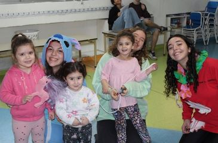
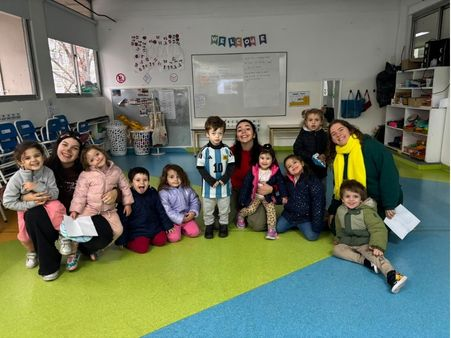
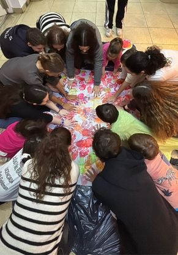
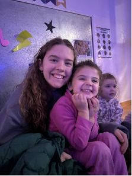

ACTO IV
Elenco
Las personas que forman parte de su historia.




FUNCIÓN FINAL
Contacto
¿Querés hablar con Tatiana? Reservá tu lugar:
Volver a ver el telónFin de la función. Gracias por venir. 👏
✦ ✦ ✦
Esta noche se presenta
Madrijá. Arte, música y teatro, con pasión en cada acto.
ARTE ✦ MÚSICA ✦ PINTURA ✦ TEATRO ✦ LITERATURA ✦ ARTE ✦ MÚSICA ✦ PINTURA ✦ TEATRO ✦ LITERATURA ✦
ARTE ✦ MÚSICA ✦ PINTURA ✦ TEATRO ✦ LITERATURA ✦ ARTE ✦ MÚSICA ✦ PINTURA ✦ TEATRO ✦ LITERATURA ✦
TEMPORADA 2026
ACTO I

Tatiana Barad Nomberg es una persona creativa, cálida y muy apasionada por el arte en todas sus formas: la música, la pintura, el teatro y la literatura.
Como madrijá, lleva esa misma energía a cada encuentro: le gusta acompañar, divertirse con los chicos y ser un ejemplo para ellos. Para ella, cada actividad es una pequeña función donde todos tienen un lugar en el escenario.
Nombre: Tatiana Barad Nomberg
Rol: Madrijá
Su lema: hacer de cada encuentro una función inolvidable
Le encanta: el arte, la música y el teatro
ACTO II
Cuatro palabras que la definen en este papel:
Juegos y risas en cada encuentro.
Estar presente para cada chico.
Ser alguien en quien mirarse.
Ganas en cada actividad.
ACTO III
Sus gustos personales. Tocá cada uno para ver más.
ACTO IV
Las personas que forman parte de su historia.



FUNCIÓN FINAL
¿Querés hablar con Tatiana? Reservá tu lugar:
Volver a ver el telónFin de la función. Gracias por venir. 👏